PORTFOLIO
Voir les projets-
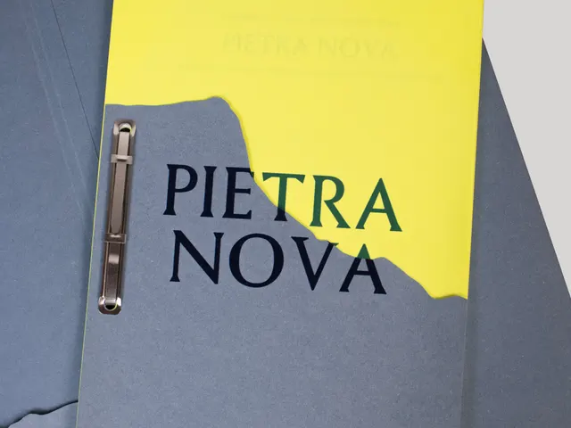
Pietra Nova -
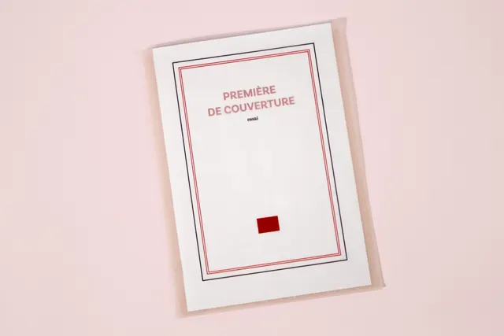
Première de couverture -
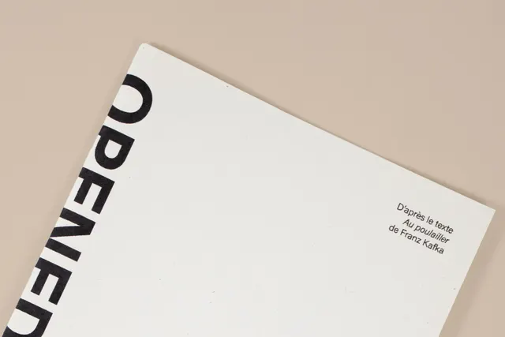
Opened Eyes - Out of the Past
- Questionnements d’une adulte en devenir
-
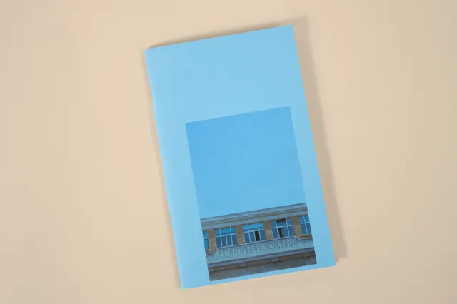
Académie des Beaux-Arts -
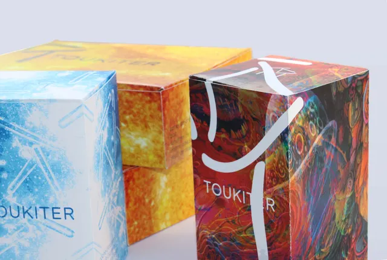
Toukiter -
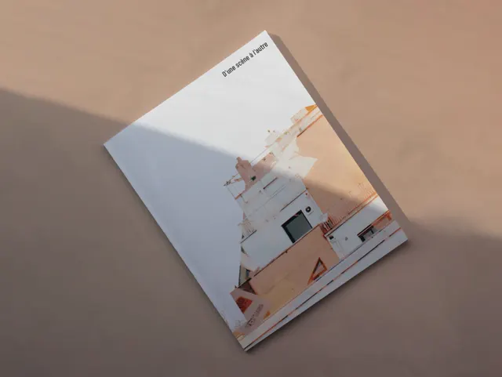
D’une scène à l’autre -
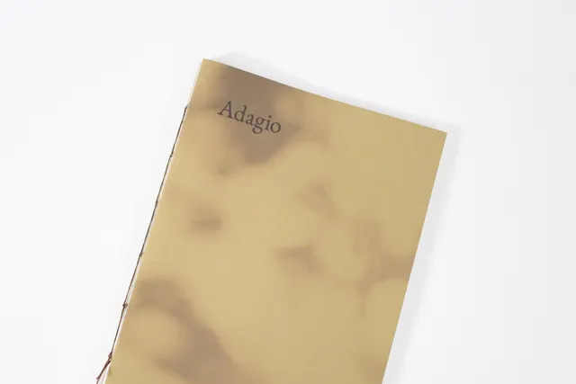
Adagio -
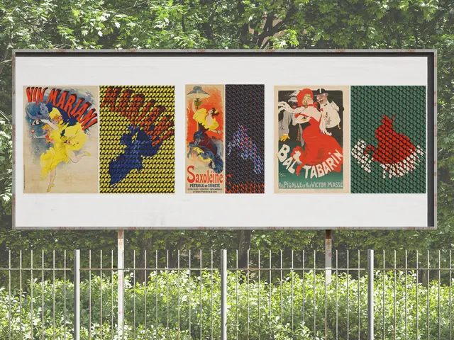
Forte impression -
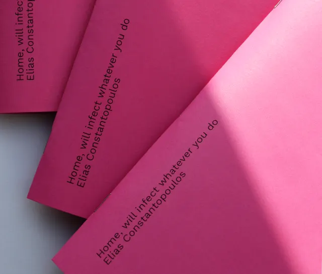
Home will infect -
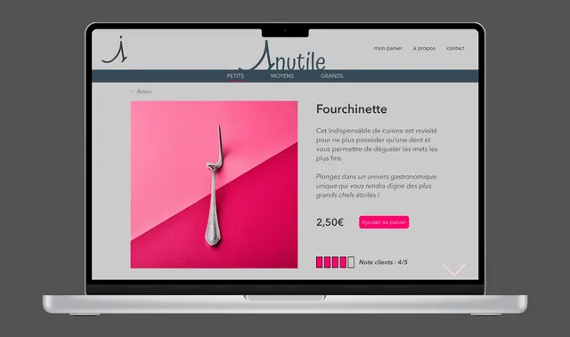
1nutile -
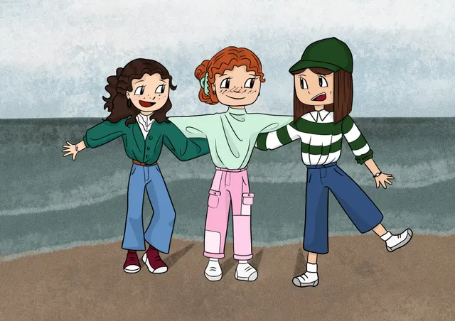
Dessins numériques -
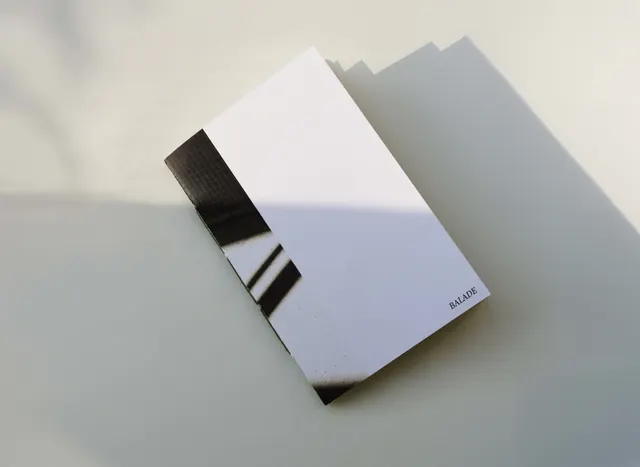
Balade -
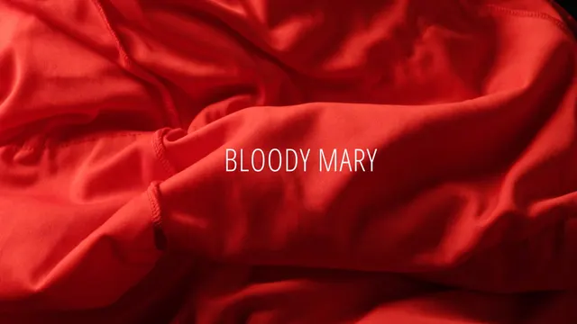
Bloody Mary -
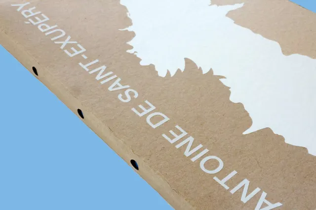
Saint-Exupéry, le coffret -
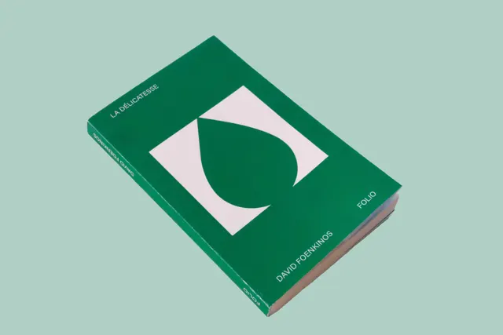
La délicatesse -
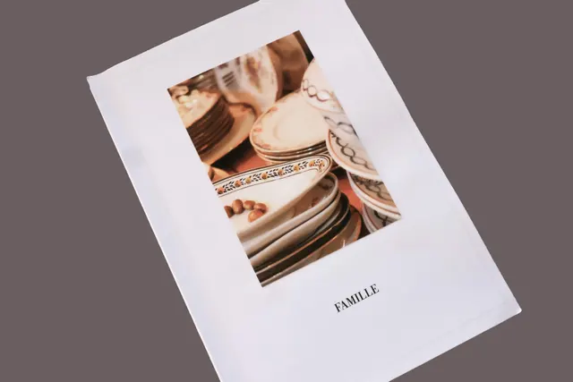
Famille -
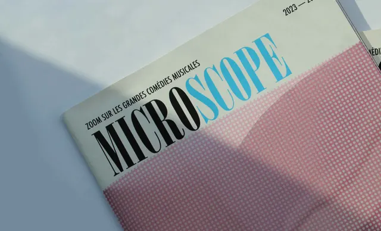
Microscope -
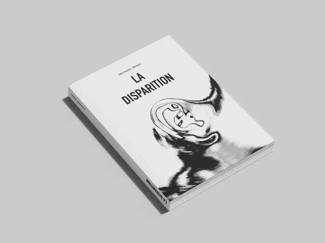
La disparition -
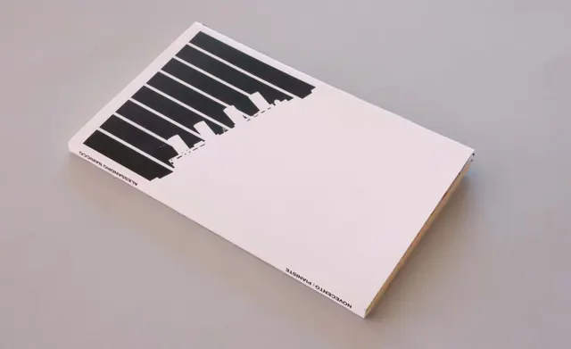
Novecento, pianiste -
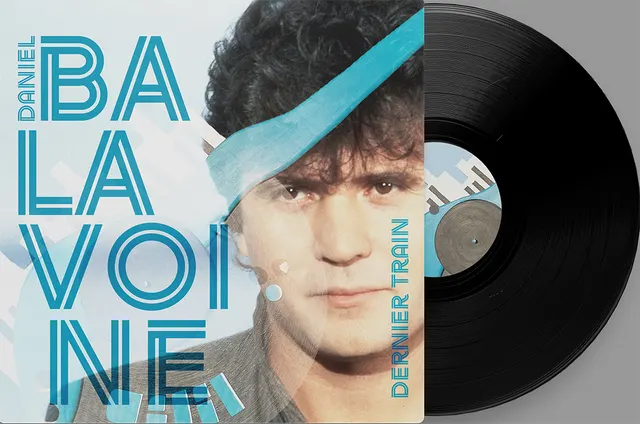
Balavoine, dernier train -
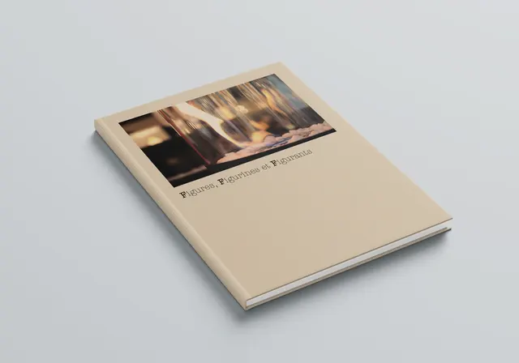
Figures, Figurines et Figurants -
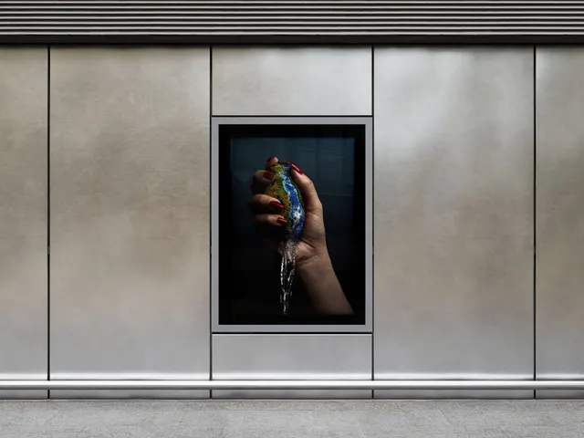
Eau secours